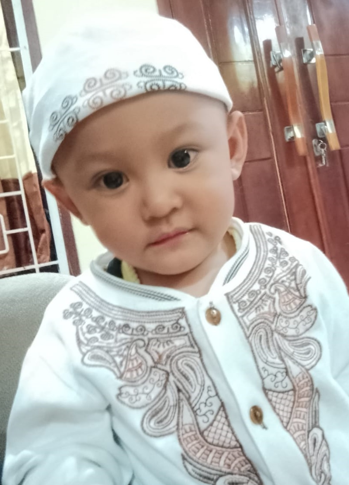

Rasyid Nur Rahman
Home
About
Galeri
Location
~ UNDANGAN SYUKURAN KHITANAN ~

Minggu, 25 Mei 2025
10:00 - 15:00 WIB
Lokasi : Kp.Dayeuhandap RT 01 RW 29
اَلسَّلَامُ عَلَيْكُمْ وَرَحْمَةُ اللهِ وَبَرَكَا تُهُ
"Dengan memohon rahmat dan ridho Allah S.W.T, kami mengharapkan kehadiran Bapak/Ibu/Saudara/Saudari Pada acara Tasyakuran Walimatul Khitan Putra Kedua kami : Rasyid Nur Rahman" Di khitan : Rabu, 14 Mei 2025 Resepsi Tasyakur : Minggu , 25 Mei 2025
~ KELUARGA AYAH DAN IBU ~
Ayah : Rizal Zulmi
Ibu : Siti Maryani
Nenek dari Ayah : Ibu Cucu Rosmiati
Kakek dari Ayah : Alm. Bpk Asep Zaenal M
Nenek dari Ibu : Ibu Aah Mintarsih
Kakek dari Ibu : Bpk Muhtar
~ TURUT MENGUNDANG ~
Bpk H.Ujang Supriatna
Ibu Hj.Tiktik
Bpk H kun- Kun Rahmat
Kel. Besar Alm . Ma Itoh
~ Lokasi Tasyakur Khitan ~
"Kp.Dayeuh Handap RT.01 RW.29 - Kota Kulon, Kec. Garut Kota, Kabupaten Garut, Jawa Barat"
FNF